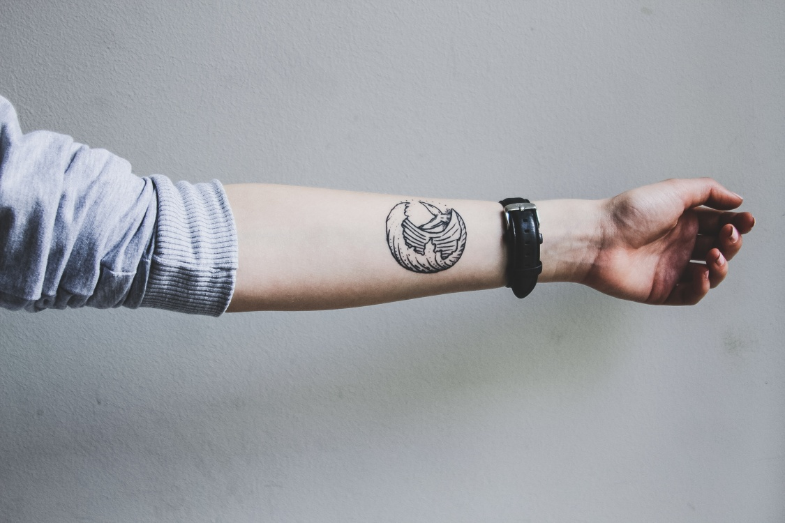
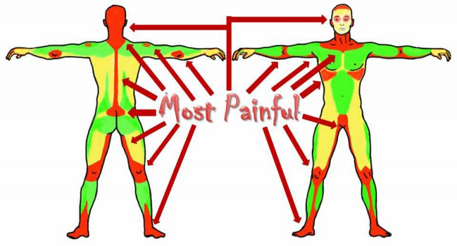

Тату – малюнок на тілі, який для кожного має свій особливий сенс. Одні набивають гарні малюнки,
бо вони
доповнюють їхнє тіло, або ж просто хочуть додати власної естетики. Інші ж в то вкладають
сакральний сенс,
або
ж, як в стародавні часи, за допомогою тату хочуть розповісти про свій соціальний стан.
У будь-якому випадку татуювання – це процедура, перед якою потрібно підготуватись та дізнатись
хоч трішки
інформації, яка може знадобиться у майбутньому. Малюнок на вашому тілі має
виглядати справді довершено,
щоб
потім не гуглити “як видалити небажане татуювання з тіла”.
Так от твій МедіаБро поспілкувався з тату майстрами Львова, яких ти вже неодноразово зустрічав
у просторі
Instagram, і отримав відповіді на найпоширеніші запитання, які можуть виникнути перед
сеансом тату.
Що потрібно знати перед тим, як набити тату?
Що ж, найперше ми тобі порадимо – запевнись, що це саме те, що ти
хочеш набити. Навіть, якщо це штрих-код
чи китайський ієрогліф, якщо це
тобі подобається – бий. Не шукай в тату глибинний і сакральний зміст. Не
гугли, що означає твій малюнок. Найголовніше, щоб тобі це подобалось,
а якщо без сенсу ніяк – то
придумай його сам, щось особливе, своє.
«Деякі клієнти дуже дивуються чому тьмянішають фарби після того,
як тату заживе. Пам’ятайте, колір тату
не буде таким яскравим, адже
спочатку фарби знаходяться на поверхні, але згодом шар шкіри
покриває
їх, тому і тату менш яскраве»
Що не можна робити «до» та «після» тату?
Тут усі майстри зійшлись на одному головному пункті – алкоголь. Не дурій і
не пий перед запланованим
сеансом
тату. Це тільки у фільмах все так круто:
напитись – набити. У реальному житті – ти втрачатимеш більше
крові, що
заважатиме майстру набивати малюнок, фарби можуть елементарно поплисти.
Так само не пий багато і після сеансу, а також на деякий час забудь про
спорт. Дай рані зажити, а тілу
відновитись.
Які можуть бути наслідки тату?
Найголовніший і найприємніший наслідок – це здійснення твоєї мрії. Гарний
малюнок назавжди залишиться на
твоєму тілі і тільки доповнить як зовнішній
вигляд так і внутрішній стан.
«Вигляд малюнка залежить не тільки від майстра, а ще й особисто
від клієнта. 50% якості малюнка – це
догляд за
тату після сеансу.
Якщо людина погано доглядає, то може вийти фарба та й взагалі
зіпсуватись всі
старання
майстра»
Не забувай правильно доглядати за тату і тоді наслідки будуть тільки
позитивні. А як правильно доглядати
ти дізнаєшся трішки згодом.
Від чого залежить ціна тату та чи можливо її
вирахувати самостійно?
Ми почули не одну відповідь і можемо сказати точно: самостійно
вирахувати майбутню ціну тату – неможливо.
Кожен майстер самостійно
встановлює її. Можемо тільки сказати від чого залежить ціна:
- досвід майстра;
- його популярність;
- матеріали, які використовує майстер;
- складність роботи;
- кількість сеансів;
- ескіз майстра чи вже готовий твій;
«Оскільки всі ці пункти в кожного майстра індивідуальні, навряд чи
можна щось вирахувати. Хіба що дуже
здалеку.»

Як обрати майстра?
Вже обрали малюнок, який бажаєте і точно впевненні, що готові? Час обрати
майстра, який тільки довершить
ваш задум і втілить його на вашій шкірі.
Найкращий спосіб обрати майстра – це передивитись його портфоліо та
коментарі тих, хто вже користувався
його послугами. Дуже дякуємо силі
соціальних мереж за таку можливість. Зверніть увагу на стиль малюнків з
якими працює автор – це має бути щось схоже на те, що бажаєте ви. Якщо
майстер працює з
мінімалістичними тату, то для того щоб набити рукав
краще обрати іншого. Є майстри, які не працюють з
кольоровими тату.
«Не бійтесь попросити вибраного майстра навідатись до нього на
робоче місце: подивитись чистоту,
розпитати особисто про
дезинфекцію, щоб бути впевненим в стерильності та своїй безпеці»
Саме такі маленькі консультації перед тату дадуть тобі змогу переконатись
у виборі майстра та його
професійності.
Найбільші міфи
Найголовніший і найбільший міф пов’язаний із значенням тату. Не вірте в те,
що тату змінить вашу долю, що
слон додасть вам сили, а квіточка – ніжності.
Тату – це малюнок, який ти обираєш самостійно, і він може мати тільки одне
значення – те, яке ти надаси
йому. Якщо тату для тебе нова сторінка життя,
то так і буде, якщо ж це просто гарний малюнок – то тату
неймовірно
доповнить твоє тіло.
І ще не забувай – тату набивається на все життя. Тимчасових тату не існує,
тільки наліпки.
Як доглядати за тату?
Про це тобі обов’язково розповість твій тату-майстер після сеансу. Виконуй
всі його рекомендації, від
цього залежить результат старання майстра та
твого вибору.
«Треба завжди слухати свого майстра і виконувати всі етапи
догляду. Перші 2-3 дні мити тату з милом і
мазати кремом, який
сприяє швидкому загоєнню, і замотувати одноразовою пелюшкою.
Це робити 3-4 рази
на день. Після того до 2 тижнів продовжувати
мити і мазати 3 рази на день, але вже не замотувати.»
Якщо методи догляду твого майстра трішки відрізняють , це не біда і не
вказує на непрофесіоналізм. У
кожного свої власні методи, але більшість
рекомендує саме крем та пелюшку.
Та навіть коли тату загоїться і шкіра вже перестане чесатися – не забувай
доглядати за тату, від цього
залежить чи знадобиться тобі корекція чи
поновлення. Якщо любиш багато проводити часу на сонці, то
обов’язково
користуйся кремами проти засмаги. Тату може досить швидко втратити свій
колір та
привабливість.
Як обрати місце для тату?
«Це вже дуже індивідуально. Найкраще, коли людина має ідею, що
саме вона хоче. Тоді малюємо ескіз і
просто приміряємо його, куди
підійде. Не потрібно обирати тату під місце, обирайте місце під тату.»
Ну, і звичайно в Інтернеті ти можеш знайти карту болю, якщо дуже боїшся.
Чи є категорія людей, яким заборонено робити тату?
Тату – це дуже відповідальна та індивідуальна справа, тому перед тим, як
щось набивати, запевнися, що ти:
- не хворієш на шкірні захворювання та не маєш цукрового діабету;
- повнолітній;
- точно знаєш, що саме хочеш набити, і прочитав всі попередні пункти.
Не забувай, що тату залишиться з тобою назавжди, і виводити малюнок
ще більш боляче, ніж його набивати.